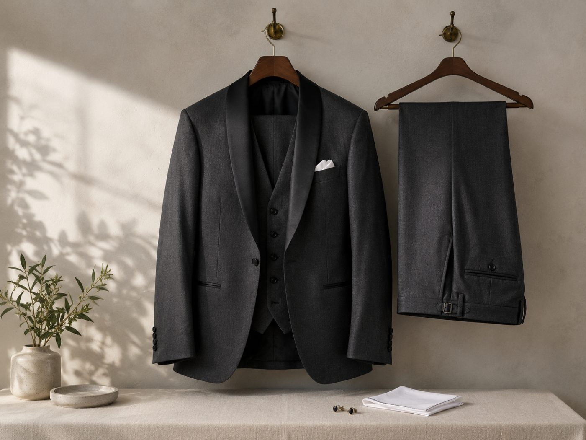

FOR GROOM
新郎の準備は、
情報がないだけ。
花嫁向けの情報は大量にありますが、新郎側はほとんど出てきません。結果、直前になって「何もしていない」ことに気づきます。写真には二人とも同じだけ写ります。

やることは多くありません。タキシードのラインに関わる体型、髭剃り跡、歯の色。この3つで写真の印象はほぼ決まります。肌の手入れを一から始める必要はありません。
時期ごとの目安
| 残り期間 | やること |
|---|---|
| 3ヶ月前 | 体型に手をつけるならここから。歯のホワイトニングも開始 |
| 2ヶ月前 | 髭や体毛の脱毛を検討するなら着手。回数が必要です |
| 1ヶ月前 | 衣装の最終フィッティング。この時点の体型で確定します |
| 2週間前 | 散髪は当日ちょうどではなく2週間前に。馴染む時間が必要 |
| 前日 | 飲酒を控える。翌朝の顔に出ます |
体型：タキシードは正直
タキシードは体のラインを拾います。特に出るのがお腹とあごの下です。この2箇所は写真で必ず目に入ります。
ただし新郎の場合、期間が短くても変わりやすい傾向があります。もともと運動習慣がない状態から始めるほど、初期の変化が出やすいためです。3ヶ月あれば十分に間に合います。

ELEMENT（エレメント）
体験3,000円月額制の通い放題で、1回30分。パーソナルジムは高額で長期契約というのが通例ですが、ここは1ヶ月から始められて好きなタイミングで辞められます。ウェアとシューズは無料レンタル。仕事帰りに手ぶらで寄れる構成です。
体験トレーニングを申し込む ＞
Dr.トレーニング
無料体験医学的な裏付けを重視した指導。16回コースと都度払いがあり、まとまった期間を確保できない場合は都度払いを選べます。カウンセリングと体験は無料。
無料カウンセリングを予約 ＞通う時間が取れない場合はオンラインという選択もあります。オンラインフィットネスの比較にまとめました。
髭剃り跡と体毛
当日の朝に剃っても、夕方には青くなります。写真の撮影は一日中続くので、ここは事前に処理しておく価値があります。脱毛は回数が必要なので、2ヶ月前には着手してください。
また、タキシードから手首が出ます。腕の毛が気になる場合は同時に考えてください。うなじも髪を短くすると見えます。
歯
笑った写真が大量に残ります。顔の中で最も目につくのが歯です。1回から受けられるものもあるので、時間がない場合でも間に合います。
肌：やりすぎない
新郎側は、普段やっていないことを直前に始めるのが最も危険です。新しい洗顔料、初めてのパック、強い成分。式の直前に肌が荒れます。
やるべきことは保湿と睡眠だけです。乾燥している肌は写真で粉を吹きます。刺激の少ないものを1つ用意して、それだけ続けてください。

ロベクチン（ROVECTIN）
—医療の現場で、通常の保湿でもしみてしまう人が使えるものとして開発されたブランド。刺激になりやすい成分を外した設計です。式前に肌が不安定になっている場合、成分を足すより減らすほうが早いことがあります。
商品を見る ＞二人で進める場合
片方だけが準備をしていると、当日の写真で差が出ます。逆に、一緒に始めたほうが続きます。運動も食事も、一人でやるより二人のほうが崩れにくい。
次に読む